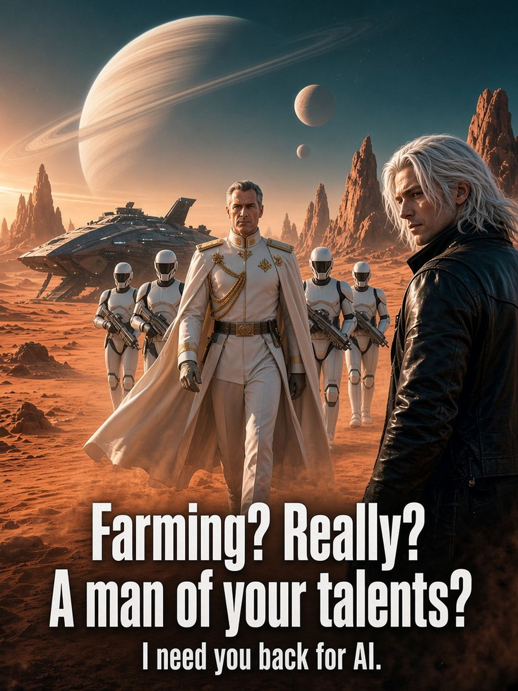

艙房A 生活隨筆 · 2026-11-24 00:01 UTC+8
握手歸握手，管制清單才是真心話🤝🧱📋｜國際觀察
睡前正要發文，才注意到最新消息，Nvidia董事會一致通過讓 Jensen Huang 復職，即刻生效。
企業公告寫著：他們參考了美國政府高層的意見，確認復職不構成國安風險。同時，公司立刻成立了全由獨立董事組成的「 國安與出口管制委員會 」，並新增「 首席合規長（Chief Compliance Officer, CCO）」一職，而針對外國情報行動滲透的獨立調查也會繼續跑完，直到結案。

市場的反應有夠直男XD：
股價從上週五（11/20）的低點強彈。一個人的去留，就能讓資本市場，反覆用這種幅度重新定價這種企業巨獸，這其實也側面說明了「 單點故障（Single Point of Failure）」風險 —— 把整個系統的穩定，全押在單一節點上。
💖 先說出自己的真心話
看到這位 AI 界的核心人物，真的如同《 魔鬼終結者 》一樣"I'll be back"回歸，老實說，我心裡當然非常開心（這應該不是AI編出的短劇吧😂）。但更讓我感到安心與振奮的，其實是這件事背後釋出的另一個明確訊號：
「 民主國家陣營對於極權國家集團的防堵，正在變得更強悍、更制度化，也更少破口。」
大家常把高層見面時的「 握手、合作、笑容 」當成關係變好了，卻沒注意到檯面下，真正的規定正在越收越緊。
在國際政治和商業博弈裡，再多的外交辭令與握手，往往只是為了爭取一些緩衝時間。白紙黑字的法律、出口管制清單、合規審查和國會聽證，才是真正決定未來幾年資金、技術、產品可以往哪裡流動的硬程式碼。
把這次科技巨頭的公司治理風波，和美國商務部最新針對遠端算力的管制放在一起看，我看見兩個很清晰的趨勢：
1. 風險權重排序：國家安全防線＞＞＞＞＞公司治理＞＞個人私事
從消息見光到主動辭職，再到復職，這場戲來回轉折了好幾次，但法人和供應鏈真正盯著的，應該早就不只是「 老闆的私領域 」或一般的公司治理瑕疵，而是背後有沒有被滲透的「 國家安全漏洞 」。
這次董事會的動作非常務實：不是只靠個人承諾或意志力，而是直接拉出獨立董事成立國安委員會、增設首席合規長，用來填補「 制度防線 」，把民主體制中脆弱的漏洞給焊上。
2. 管制線持續外擴，「 兩邊都想賺 」的灰色地帶正在終結
表面上，各種商務往來和緩和的訊號都還看得到，但我的判斷是：美國對極權陣營的科技圍堵，實質上只有越收越緊。最近美國華府直接把多個東南亞國家的轉運熱點，列為「 高轉運風險國家 」，未來只要將先進晶片出口或轉移到這些國家，原則上都要先申請許可（留言處的參考資料）。
「 繞道第三國 」和「 遠端租算力 」這些灰色空間，正在被一個一個堵起來。
我來講點白話文：
在關鍵技術和戰略物資上，過去那種抱著「 想跟兩邊都做生意、兩邊都不得罪、還能全身而退繼續數鈔票 」的「 搖擺草 」日子，應該是越來越不容易了。
🤔 先替讀者問一個最可能出現的疑惑：
「 你一邊說不要押單一來源，一邊又肯定美國的管制，不就是把安全全押在美國陣營嗎？」
我的回答是：是，也不是。
打個比方：如果擔心家裡被強盜光顧，最合理的做法是把門鎖焊緊、準備防身武器、提升自家的防衛能力，並且找價值觀相近、講信用、可以信任的好鄰居互相照應；而不是直接跑去跟劫匪投降、握手談判，還夢想對方大發慈悲不傷害你/妳。
我的思考邏輯很單純：
- 美國怎麼做，是可以觀察到的政策方向；且身為一個國家的公民，本來就要有決心跟意願守住自己與家人。
- 找價值觀相近、可靠的盟友，本來就是每個人日常生活中就會做出的選擇，但那只是防禦網的其中一層，最重要的還是自己的決心與守護意識。
- 真正的安全，是「 自己防守的能力＋價值與利益相近的盟友＋不把雞蛋都押在同一處 」疊加起來的結果，而不是只想找人微笑與握手。
（備註：我本身是碩班畢業後就入伍，服滿將近一年的義務役，在陸軍裝甲部隊服役。這本來就是每個符合役男標準的台灣男性，應該盡到的共好義務，過去的安心也是因為有人付出。）
最後，再次為那位穿黑色皮衣的靈魂人物帥氣回歸感到高興。
但更重要的是：
不管誰在不在位子上，制度的防火牆都正在逐步建立起來。而我們每個人、每家企業、每個國家，也都該學會具備不依賴單一善意的生存韌性。
願台灣能夠繼續在AI賽道上，扮演關鍵民主供應鏈的角色，願每一次的危機，都讓我們變得更加強韌（resilience）。
［註：以上內容純屬個人非勤務時間之產業與風險管理觀察紀錄，不代表目前或曾經服務企業之官方立場，亦不涉足任何受特許規範之證券投資顧問、大盤行情研判或個股推介業務。］
One more thing
Robert 補充與碎碎念
網站限定
▸ 延伸補充｜為什麼管制會下手這麼重？外媒報導的「 繞道用途 」 🧩
看到這裡，可能還會有讀者想說：「 那有什麼，說不定繞道買這麼多頂級算力，只是為了製作可愛的 AI 動畫而已啊？」
（我的OS：對阿，砸上千億台幣繞道走私高階晶片，只為了算幾張美女圖跟製作AI動畫，可能順便幫飛彈算一下航母打擊群的攔截彈道 🙄。）
看看這幾天《 紐約時報 》（The New York Times）的調查報導就懂了：有東南亞的公司透過層層轉單，狂掃了超過 40 億美元的頂級 AI 晶片，背後金主直指該國巨頭（美商務部也已火速將該公司列入出口管制黑名單）；而與該生態系高度關聯的該國實驗室，甚至被發現拿頂級算力在跑「 模擬如何阻絕美軍航母馳援、攻打某座獨立國家島嶼 」的軍事兵棋推演。
這就是為什麼我說，這不是天真無害的商業競爭，而是大家生存防線的保衛戰。
📎 新聞來源：
▸ The New York Times（2026/11/19）：揭露 Megaspeed 公司採購逾 40 億美元輝達晶片與中國實驗室模擬攻台兵推
▸ CNA / Reuters（2026/11/24）：美國商務部正式將涉案公司 Megaspeed 列入出口管制黑名單
網站限定
 ▶ 在 YouTube 觀看 →
▶ 在 YouTube 觀看 →🎬 Rogue One: A Star Wars Story - Clip: "Galen and Krennic" 影片在 YouTube 播放，版權屬原上傳者。
延伸彩蛋｜電影意象補充
為什麼會挑這段電影片段放在這裡當補充？跟電影裡角色的陣營或善惡無關，純粹是看到這場復職大戲時，腦海裡立刻浮現《 星際大戰外傳：俠盜一號 》的那一幕：即使手握幾乎全部的人力、物力、財力資源，當最核心的超級系統卡關、進度無法推進時，決策高層終究得親自把那位「 唯一懂整套底層架構的頂尖科學家 」給請回來。
劇中那句經典台詞：「 Farming? Really? A man of your talents?（務農？真的嗎？以你的才華？）」，某種程度上就是現實商業與科技戰場的縮影。
網站限定
📎 參考資料：
讀完有什麼想說的？不用真名也可以。📡 傳訊給我 →